<!DOCTYPE html>
<html lang="en">
<head>
    <meta charset="UTF-8">
    <meta http-equiv="X-UA-Compatible" content="IE=edge">
    <meta name="viewport" content="width=device-width, initial-scale=1.0">
    <title>Flower</title>
    <link rel="stylesheet" href="assets/css/reset.css" type="text/css">
    <link rel="stylesheet" href="assets/css/main.css" type="text/css">
    <script src="assets/js/jquery-3.4.1.min.js"></script>
    <script src="assets/js/main.js"></script>
</head>
<body>

      
</body>
</html>
<div class="container">

      <div class="cell">
        <div class="content fist">
            
  </div>
    
      </div>
    
      <div class="cell ">
    
        <div class="content money purple">
        </div>
    
      </div>
    
      <div class="cell">
    
        <div class="content cleopatra">
         <a href="cleopatra.html">  CLE <br /> OPA <br /> TRA </a> 
        </div>
    
      </div>
    
      <div class="cell ">
       
        <div class="content religion purple">
            
        </div>
    
      </div>
    
      <div class="cell">
    
        <div class="content queenbee">
            The term queen bee is typically used to refer to an adult, mated female (gyne) that lives in a honey bee colony or hive; a female bee with fully developed reproductive organs, she is usually the mother of most, if not all, of the bees in the beehive. <br /> <br />  Queens are developed from larvae selected by worker bees and specially fed in order to become sexually mature. There is normally only one adult, mated queen in a hive, in which case the bees will usually follow and fiercely protect her.
        </div>
    
      </div>
    
      <div class="cell ">
    
        <div class="content gun purple">   
                
        </div>
    
      </div>
    
    </div>

